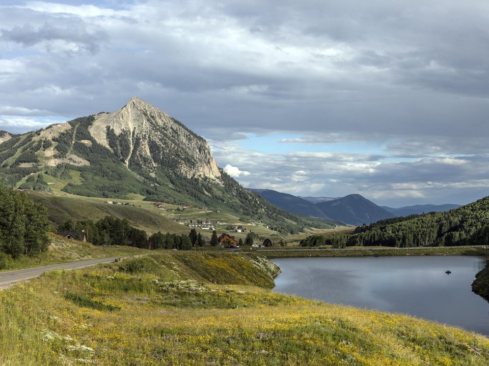

Mount Crested Butte · Resort hotel
Elevation Hotel & Spa
Slopeside rooms at the base of the ski area.
Official details for Elevation Hotel & SpaWildflowers and painted storefronts.
Crested Butte is a former coal town at the end of a valley, its brightly painted Victorian storefronts on Elk Avenue backed by meadows that turn into Colorado’s best wildflower displays every July. Land at Gunnison–Crested Butte Regional, drive 30 miles up the valley, hike through the lupine and columbine, ride the trails that helped invent mountain biking, and save a morning for the sheer walls of the Black Canyon of the Gunnison.

Time illustration: direct distance at 150 KTAS plus 15 minutes for departure and arrival, matching the discovery page. Use ForeFlight for your actual flight plan.
Check the weekend weather at both ends → Flight category, your minimums and the crosswind on the best runway.
KGUC, Gunnison–Crested Butte Regional, is a non-towered county airport at 7,680 feet with a 9,400-foot main runway, about 40 minutes from Crested Butte.
Gunnison–Crested Butte Regional Airport, Gunnison, CO
Gunnison is one of the coldest places in the lower 48 in winter and has high density altitude in summer. Runway 17/35 is closed December to May. No live fuel price is shown.
Mountain flying: high density altitude on summer afternoons, mountain wave and strong winds over the ridges, afternoon thunderstorms from July to September, and winter snow and icing. Consider a mountain-flying course before you go. About 1380 nm from Myrtle Beach: two long days each way with several fuel stops. Plan a week, or overnight on the way out and back.
Rates and availability need travel dates. Wildflower weeks book up early.
Slopeside rooms at the base of the ski area.
Official details for Elevation Hotel & SpaA small luxury lodge in a historic building in town.
Official details for Eleven Scarp Ridge LodgePrices and availability for your dates, through our partner Stay22. This is an affiliate link: we may earn a commission at no cost to you. The picks above are never paid.
Reserve weekend dinners.
Creative pizza in a laid-back old building.
Official details for Secret StashRum and cocktails on Elk Avenue.
Official details for Montanya DistillersRestaurants in Crested Butte and Gunnison.
Gunnison–Crested Butte for More restaurantsMornings are best for hikes.
Steep skiing in winter; lift-served biking in summer.
Crested Butte Mountain ResortA national park of dark, sheer cliffs; about 90 minutes from Gunnison.
NPSThis prototype links to the local visitor site. It does not yet match events to your travel dates.
Guided walks, classes and tours.
Wildflower Festival for Crested Butte Wildflower FestivalGolden aspens in the valleys.
Gunnison–Crested Butte for Fall colorSkiing above town.
Crested Butte Mountain Resort for Ski seasonCheck the local calendar when choosing a weekend, and confirm dates and tickets with the organizer.
A sample Crested Butte weekend. This is a two-day flight each way; plan a week. No bookings or availability confirmed.
Land at KGUC mid-morning.
Drive up the valley and lunch on Elk Avenue.
A short wildflower walk, then back to the airport.
Land at KGUC, subject to weather, density altitude and your actual flight plan.
Drive up the valley and walk Elk Avenue.
Dinner at Secret Stash.
A wildflower hike.
The ski area’s summer lifts.
Cocktails at Montanya, then dinner.
Back to Gunnison.
Compute takeoff performance for the morning temperature and allow time at the FBO.
Mountain afternoons bring wind, turbulence and storms; leave early.
A wildflower hike.
The ski area's summer lifts.
Dinner at Secret Stash.
This guide is part of a multi-stop flying trip. Set your dates and aircraft, then swap stops to make it your own.
These details make the difference between an appealing list and a usable getaway.
Lodging first, then a car.
About 1,380 nm: two days each way.
Winter mornings below zero are common.
July for flowers, September for color.
Picks and links reviewed by WingAway Weekends. Hours, prices, menus and availability change often, so confirm directly with each place before booking. Spotted something out of date, or have a favorite we missed? Email us at hello@wingawayweekends.com.
WingAway Weekends helps you discover the destination. Use ForeFlight and current official aviation information for route, performance, weather, NOTAMs and preflight decisions. Flight planning and PIC responsibility stay with the pilot.